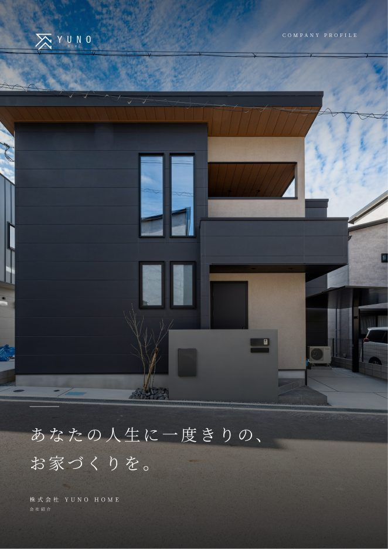
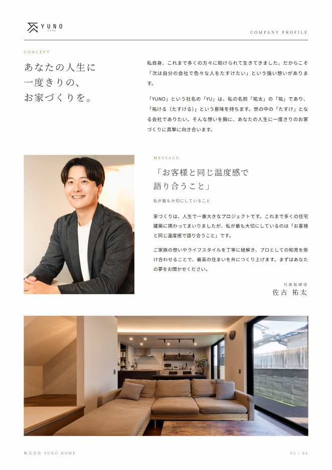
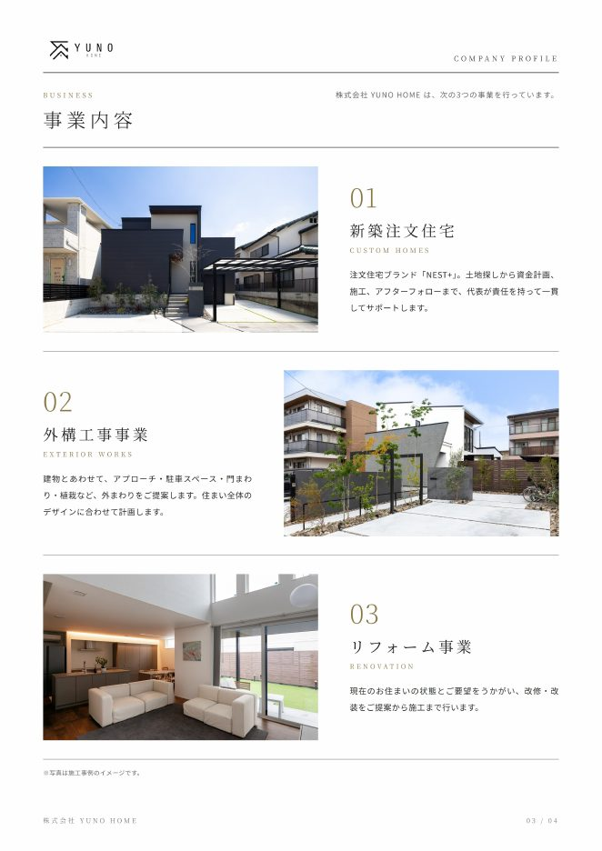
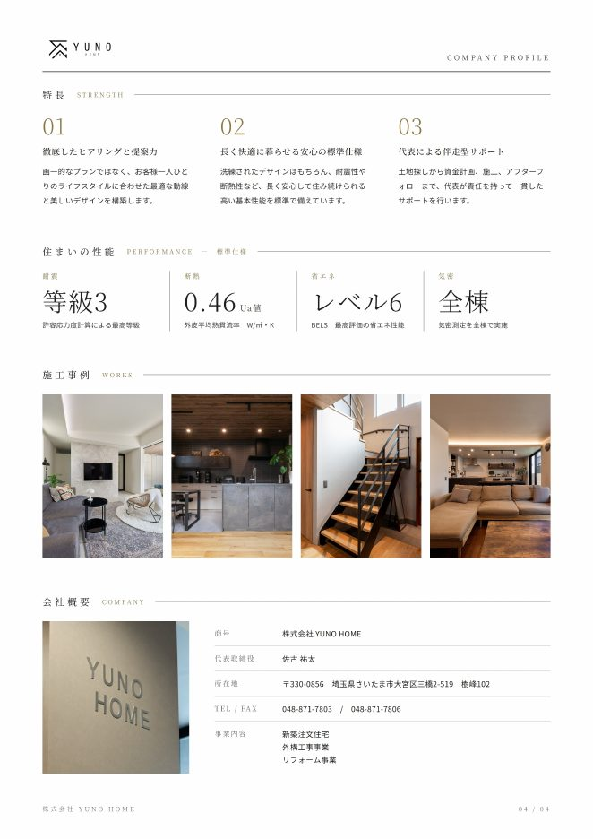

電話の横に置いて使う手元用の資料です。7/17の研修でYUNO HOME 佐古社長に公開いただいた「電話・メールの型」に、つながるまでの動き方、7項目の言い回し、メールとSMSの文面、記入用のシートを足しました。
全加盟店様の合計です。通話接続率＝電話がつながったお客様 ÷ 加盟店様が対応を始めたお客様。
10月に登録したお客様は、まだ1か月たっていないのに半分以上とつながっています。登録から早いうちに電話がつながるようになってきた、ということです。
研修前・研修後はKPIダッシュボードの画面（10/5時点）、直近3か月と登録月ごとは本部の集計（10/25時点）。10月は25日までの登録。
7/24の研修で伺った、接続率の高い3社（大建建設様・竹村工務店様・坂本建設工業様）の進め方から共通する部分を抜き出しました。やり方は店ごとに違っていて構いません。決めてあるかどうかで差がつきます。
遅くとも翌日。登録の通知メールを誰が見て、誰が掛けるかを名前で決めておくと、「誰かが掛けるだろう」がなくなります。
同じ時間に掛け続けても、お客様の生活の時間とずれたままです。
1本目に出なかったら、SMSかメールを送っておきます（文面は4章）。メールには会社の紹介資料を添えると、電話の前に「どんな会社の、どんな人か」を知ってもらえます。留守電は残す店と残さない店があります。残すなら、1回目はお礼、2回目は動画のご案内のように中身を変えます（大建建設様）。
区切りがあるから、掛けるべきお客様に時間を使えます。掛けた日時と結果はその都度メモに残しておくと、次に掛ける時間帯を選べます。
月に一度のイベント案内や動画で、お客様の手元に名前を残しておきます。7月・8月に登録したお客様とも、10月の後半に入ってからまだ電話がつながっています。
本部フォームのお客様はLIFE Xの資料を請求しただけで、まだ御社の名前を知りません。そのぶん、最初の電話は「LIFE Xの資料のご請求ありがとうございます」を先に言い、会社名は後から伝えます。10月に本部フォームから登録したお客様は、対応を始めた方の57.9%と電話がつながっています（それ以外のLIFE X経由は41.5%）。つながりやすいお客様なので、後回しにしないことがいちばん効きます。
| 大建建設様 | 竹村工務店様 | 坂本建設工業様 | |
|---|---|---|---|
| 誰が掛けるか | アシスタントの方が登録通知を直接確認して掛ける | 営業ご本人がすべて掛ける | 最初の3本は営業ご本人、その後は別の担当者 |
| 最初の1本 | 登録があった時点ですぐ | 9〜17時、気づいたらすぐ（遅くとも翌日） | 登録時すぐ。同じ日の18時以降に2本目 |
| つながらない時 | 夕方・週末に掛け直し。動画のメールを送る | 11〜13時と15〜17時。翌日は別の時間帯 | メールの開封通知が来たらすぐ掛ける |
| 留守電・SMS | 留守電は必ず残す（1回目お礼、2回目動画案内） | どちらもなし。出なかった記録はメモで管理 | 留守電は残さない。メール・SMSを送る |
| 区切り | 電話は3回まで、以後は定期配信 | 1週間で判断して次へ | 3回で担当交代 |
| つながった後 | 7項目を聞いて、その場で日程を決める | 通話中にSMSでLINEのQRを送り、LINE交換まで済ませる | LINE公式アカウントへご案内 |
7/24 LIFEX MTG（架電率UP）で各社から伺った内容（2026年7月時点）。竹村工務店様の通話接続率は、直近3か月（7/26〜10/25）で76.2%です。
この電話が何のための時間かを、先に決めておく。ここから7項目までは佐古社長の型です。
まずは会う約束を取り付ける。ここは当然の目的。
電話で聞き切った情報が、初回商談の準備になる。契約までのスピードが変わる。
お客様が電話ですべてを把握することは不可能。答えは面談に取っておく。
持ち帰らず即答するから、お客様の本音が聞ける。
質問を7つ並べて尋問しない。会話の流れの中で自然に聞いていく。
「では、何時ごろでしたらお電話しやすいですか？」と、その場で次の時間を決めて切る。決めた時間は必ず守る。
1のきっかけから入る。7項目の順番どおりでなくてよい。話の流れで出てきたものから聞く。
言い回しは本部で作った例です。
「狙い」は佐古社長の型、「言い回しの例」と「答えで分かれる」は佐古社長の狙いに沿って本部で作った例です。自分の言葉に直して使ってください。
狙いお客様が重視している部分の把握。建売も見ているのか、注文しか見ていないのか。価格重視なのか、デザイン・間取り重視なのか。ここが初回提案の軸になる。
「総額がいくらになるかは、土地も含めて面談で一緒に出しましょう」と、面談の中身として予告する
気になったプランを聞いておく。面談でそのプランを用意できる
狙いお客様の知識レベルの把握。性能などの数値で、あえて専門用語を使ってジャブを打つ。反応で「どこまで勉強しているか」が見える。
勉強されている方。面談では数字を並べて比べる準備をしておく
電話では説明しない（3原則の①）。「そのあたりも面談で分かりやすくお話しします」で止める
狙い契約時期の把握。土地の有無で、その後の動き方が分かれる。
土地資料を事前に全部もらう。初回商談までに調べ切っておく。「面談までに調べておきますので、住所か図面を送っていただけますか」
探している媒体を確認。良い土地はあったか、相場が分かっているかを把握し、「その土地は高い」ということをこちらから言ってあげる。
狙い親御様がお子様のこと（入学・進級など）を重視しているかどうかの把握。ここが分かれば初回商談の準備ができる。ただし電話では答えを出し切らず、あえて余白を残す。
「間に合うかどうかは、面談で工程を組んでお見せします」。電話で可否を答えない
無理に決めさせない。家賃や更新の時期を聞いておくと、面談の話題になる
狙い予算感の把握。すでに通していれば他社で言われている内容があるはずなので、それを踏まえて対策できる。
「差し支えなければ、どのくらいで通ったか教えていただけますか」。他社で言われた金額を把握しておく
「面談で、月々の返済から逆算した資金計画を一緒に作れます」と、来る理由にする
狙い提案の幅を広げるため。予算・契約時期・お客様の属性と掛け合わせて、出せる提案が変わる。
狙い競合他社の強みを把握し、初回商談のアプローチを修正するため。相手が分かっていれば、初回から刺さる話ができる。
電話で他社の悪口は言わない。「比べるポイントを面談でお伝えします」で止める
最初の1社になれる。日程の打診を早めに
「いつがいいですか？」と聞くと決まらない。メールと同じで、こちらから候補を出す。
「資料をお送りしたいので、今SMSでLINEのQRコードをお送りしますね」。SMSが届かない設定の方もいるので、QRコードも必ず送る。
言い回しは本部で作った例です。LINEの進め方は7/24研修で竹村工務店様から伺った内容です。
メールの目的は2つ。①電話に応対いただけない方へのアポ促進、②来店スケジュールを相手に委ねないこと。【 】の中を自社の内容に置き換えて使ってください。「コピー」で本文をコピーできます。
スケジュールを相手に委ねると、返事を考えるのが面倒になり、返信率が落ちる。
相手は選ぶだけでいい。「土地探しから総額まで初回から提案できる」と明記し、来店する理由も一緒に渡す。
例として、YUNO HOME様の会社紹介資料（A4・4ページ）です。電話では建物や性能の話をしない（3原則の①）ぶん、資料が代わりに語ってくれます。




【お名前】様 LIFE Xの資料請求ありがとうございます。【会社名】の【名前】です。先ほどお電話しました。ご都合のよい時間をお知らせください。
【お名前】様 株式会社【会社名】の【名前】です。お電話が難しければ、こちらのLINEからもご相談いただけます。【LINEのURL】
件名：LIFEXお打ち合わせ日程のご案内 〇〇さま お世話になっております。 この度はGハウス規格住宅のLIFE Xのサイトにて会員登録のほどありがとうございました。 埼玉県の施工店（埼玉エリア）の株式会社YUNO HOME 佐古祐太と申します。 LIFEX総額の資金計画や内装について、是非一度お打ち合わせにてご案内させていただければ幸いでございます。 もし、ご興味がある場合は以下の日時にてご検討のほどよろしくお願いいたします。 6/20 10時〜 6/27 13時以降 6/28 13時以降 上記日時でご都合いかがでしょうか？ 土地探しからトータルの費用まで初回からご提案可能でございます。 ぜひご検討のほどよろしくお願いいたします。
件名：LIFE Xの資料のご請求ありがとうございます（【都道府県】の施工店 株式会社【会社名】） 【お名前】様 はじめまして。【都道府県】でLIFE Xを建てております、株式会社【会社名】の【名前】です。 このたびはLIFE Xの資料をご請求いただき、ありがとうございます。【都道府県】での家づくりは、私どもがお手伝いいたします。 注文住宅は予算が心配、建売は間取りがしっくりこない。そんな迷いはありませんか。 私どもの会社の紹介資料を添付しました。どんな会社がお手伝いするのか、先にご覧いただけると幸いです。 資料だけでは分かりにくい総額や、土地探しを含めた進め方は、一度お会いしてご説明させてください。 以下の日時でご都合はいかがでしょうか。 ・【月/日（曜）】10時〜 ・【月/日（曜）】13時以降 ・【月/日（曜）】13時以降 ご都合が合わなければ、ご希望の日時をお知らせください。このメールへのご返信でも、お電話でも大丈夫です。 株式会社【会社名】 【名前】 【電話番号】
件名：LIFE Xの【見学会／モデルハウス】のご案内 【お名前】様 先日はLIFE Xの資料をご請求いただき、ありがとうございました。株式会社【会社名】の【名前】です。 何度かお電話しましたが、お忙しい時間だったようで失礼いたしました。 話を聞く前に、まずは実物を見てみたい。そんな方のために、ご案内をお送りします。 【イベント名】 日時：【月/日（曜） 時間】 場所：【場所】 【ルームツアー動画があればURL】 ご予約は、このメールにご希望の日時を書いてご返信いただくだけで大丈夫です。 株式会社【会社名】 【名前】 【電話番号】
件名：その後、家づくりはいかがですか（株式会社【会社名】） 【お名前】様 以前、LIFE Xの資料をご請求いただいた際にご連絡した、株式会社【会社名】の【名前】です。 その後、家づくりはいかがでしょうか。 土地がなかなか見つからない、総額が見えなくて止まっている。そんなところで一度お休みされる方も少なくありません。 【今月のイベントや相談会のご案内】 今は時期ではない、ということでしたら、このメールは読み流してください。気になったときに、いつでもご連絡ください。 株式会社【会社名】 【名前】 【電話番号】
C以外は本部で作った例です。お客様に届く文章なので、「商談」「アポ」などの言葉は使っていません。
1人につき1枚。印刷するとこのシートだけが新しいページから始まります。
| 回 | 日時（曜日） | 結果（通話／不在／留守電） | 送ったもの・メモ |
|---|---|---|---|
| 1 | |||
| 2 | |||
| 3 | |||
| 4 | |||
| 5 | |||
| 6 | |||
| 7 |
| 1 規格住宅（LIFE X）を見たきっかけ | |
|---|---|
| 2 家づくりを始めた時期・知識の程度 | |
| 3 土地（あり：住所・資料／なし：探し方・相場感） | |
| 4 住み始めたい時期（お子様の入学など） | |
| 5 ローンの事前審査（済み：金額／まだ） | |
| 6 希望エリア | |
| 7 見ている他社・進み具合 | |
| 面談の日時／LINE交換 |
電話の目的・3原則・7項目の狙い・メールCは、YUNO HOME 佐古社長の実践資料（7/17 LIFEX加盟店研修）から。3社の進め方は7/24 LIFEX MTGで大建建設様・竹村工務店様・坂本建設工業様から伺った内容（2026年7月時点）。
数字はLIFE X加盟店ポータルの集計（研修前・研修後は10/5時点のダッシュボード、それ以外は10/25時点の本部集計）。
会社紹介資料の例は、株式会社YUNO HOME様の会社紹介資料（A4・4ページ）。
文面の日時・担当者名は例です。自社の候補日・担当者に置き換えて使用してください。